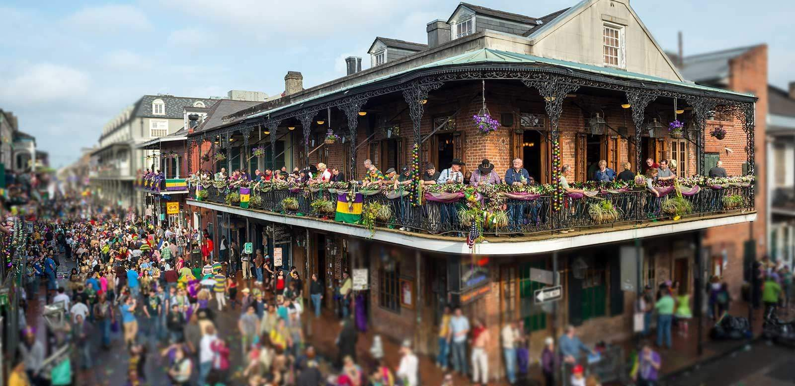

Festivals · Culture
Mardi Gras New Orleans 2027 (Carnival parade season)
- Dates
- –
- Location
- New Orleans, United States
- Format
- In-person
- Category
- Culture
- Industry
- Culture
- Organiser
- Krewes of New Orleans (schedule published by MardiGrasNewOrleans.com)
- Official website
- https://www.mardigrasneworleans.com/parades/
About
Span is the published 2027 parade schedule, from Twelfth Night (6 Jan) to Mardi Gras day (Tue 9 Feb 2027). The schedule site is the long-running official guide rather than a single organiser. US dates are local to the host city.
Topics: Carnival, parades.
No organiser attendance figure found on the official pages fetched 23 Nov 2026. Ranked by our estimated size tier 'very large' (100,000+ attendees/visits), a judgement from format, venue and scale, not an official number.
Sources
- Official — https://www.mardigrasneworleans.com/parades/